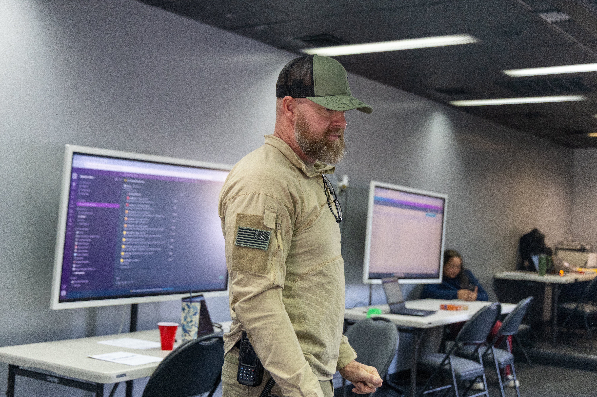
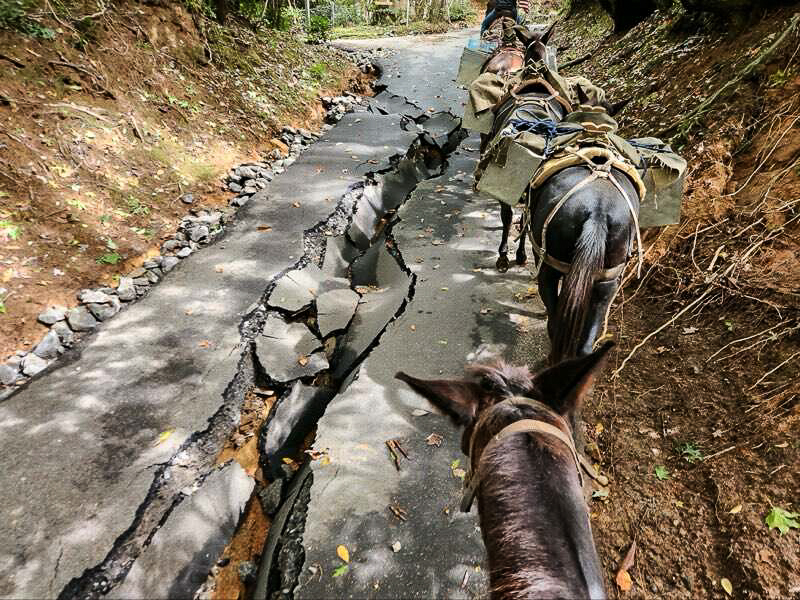
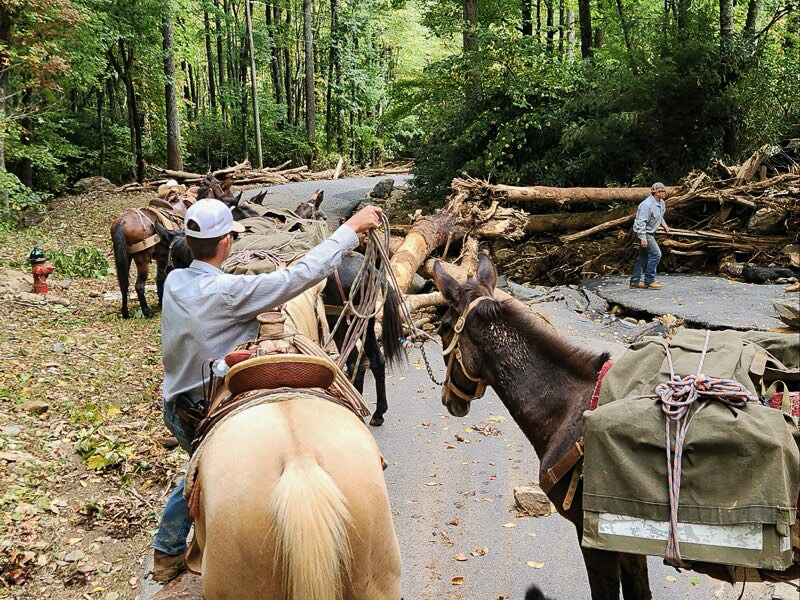
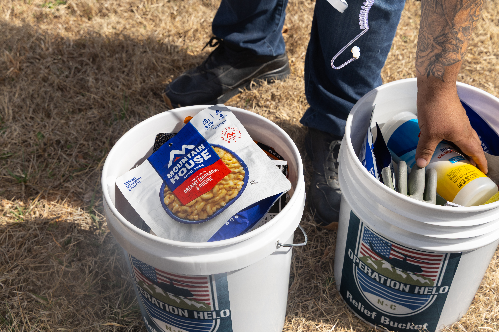
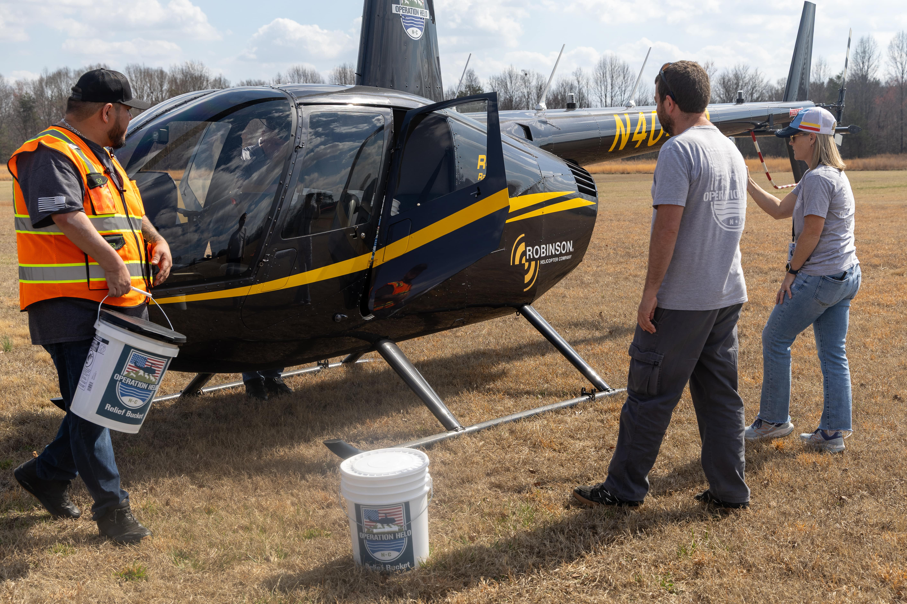

Suited head-to-toe in khaki, Eric Robinson stands with hands on his hips, monitoring the hustle and bustle of Operation Helo's mobile command center in Taylorsville, North Carolina. The trailer, which was transformed into a fully functional command post just one day prior, is lined with massive 40-inch monitors illuminated by the organization's Slack channel, while muffled walkie-talkie voices fill the focused silence. Two hours into their mock rescue mission, a simulated distress call crackles through the room: coordinates, a situation report, a pilot's voice responding on the other end. Eighteen months after tropical storm Helene made landfall in western North Carolina, this is what preparation for the next storm looks like.
"We grew over the course of 11 days to what we have now," said Robinson, the co-founder and executive director of Operation Helo. "This is the culmination of all of our work."
Seventeen members of the organization, including six helicopter pilots, gathered at Operations Director Natasha Rodriguez's 40-acre home in early March, with a shared goal of being ready for whatever comes next. To them, this is not a training exercise. It's a "strategic mission planning" designed to stress-test technology, streamline the process of assigning missions to pilots and ensure nothing slips through the cracks when the next disaster strikes.

Eric Robinson, co-founder and executive director of Operation Helo, observes his team's work in their mobile command center in Taylorsville, N.C. Photo credit: Mia Filler
Operation Helo is one of several North Carolina-based nonprofits formed in the aftermath of Helene. In the immediate wake of the storm, residents of Asheville and the surrounding regions were left without internet access, drinking water, information about the safety of their loved ones, and, for many, a home. The mountainous, flooded terrain made access to aid even more difficult, leaving those stranded in areas inaccessible to vehicles. When federal relief couldn't yet mobilize, Operation Helo airlifted supplies by helicopter, Mission Mules delivered aid on mule-back through flooded mountain trails and Down Home NC canvassed rural areas door-to-door. Now, all three are expanding beyond Helene.
"Nonprofits and spontaneous volunteer efforts are filling the gap of trying to meet the needs that official government efforts aren't able to address," said Dr. Samantha Montano, a professor of emergency management at Massachusetts Maritime Academy. "Because of the size of Helene and how much need there was, you see a big portion of that response being led by nonprofits and other kinds of grassroots community organizations."
For Operation Helo, that gap opened on Sept. 27, 2024, the day Helene made landfall in North Carolina. Just five days later, Operation Helo incorporated as an official 501(c)(3) nonprofit organization. Robinson brought together a group of volunteer pilots, and soon enough, various community members showed up to support their post at the Hickory Regional Airport. Natasha Rodriguez and her husband, Jose, were among these volunteers, starting out in the call center and triaging assistance amid the rapid influx of devastating requests.
"I will definitely say this is nothing that any one of us had on our bingo cards, but it has been such a blessing," Rodriguez said. "We have been boots on the ground pretty much from the beginning, even to now."
Meanwhile, 50 miles northeast of Hickory, Mike and Michele Toberer were readying their mules at their packer ranch in Harmony, North Carolina. The husband and wife were about to head down to South Carolina for a planned training session with the U.S. Marines when Helene hit, and the trip was abruptly canceled due to the unexpected extreme flooding. Even 100 miles from the Blue Ridge Mountains, where the storm hit the hardest, the Toberers lost power in their home. The following day, when it came back, the news exposed them to the destruction and widespread needs of the victims in the western regions of the state.
"We left that next morning," said Mike Toberer, the Mission Mules co-founder. "We spent two or three weeks there right in the beginning, and we still are moving food and supplies there right now."


Mission Mules volunteers rode on mule-back, traversing fallen trees and damaged roads, to deliver essential supplies in the wake of Helene. Photo courtesy: Michele Toberer
After a few months on the front lines of delivering aid, Mike and Michele grew wary of their ability to continue. Not only had they witnessed an abundance of tragedy, but also two of their mules were killed in the aid and recovery process. Then, Samaritan's Purse called.
"We figured that was God telling us that we are going to wrap this up," Toberer said. "Then the next day, Samaritan's Purse called us and said, 'Hey, we want to get you enough mules so you can keep going.' They restocked all the mules that we lost, and that's when we decided, 'This is what we're going to be doing here.'"
In those early chaotic days, before federal relief could reach the cutoff and isolated, these groups were finding their own ways in. Operation Helo and Mission Mules were united by physical access — they had the assets to reach people and places that conventional relief simply couldn't. Down Home NC, a grassroots organizing group with deep roots in rural communities across the state, was leveraging something even harder to engender: trust.
Down Home NC had spent years embedding itself in rural communities across North Carolina long before Helene arrived. Founded in 2017, the organization focuses on base-building and political mobilization among multiracial working-class residents in small towns, empowering communities that often go unheard in state-level policy decisions.
When Helene hit in September 2024, Down Home was already in the middle of election season, knocking on doors across 13 counties to encourage voter registration and turnout. They used that established infrastructure to show up differently, yet meaningfully, when the storm hit.
"Because of the work that we did to build our relationship within the community, it was a no-brainer for our folks to take this mobilization effort that we were already in the middle of and turn it into a wellness canvassing effort instead," said Down Home's Communications Director Taí Coates-Wedde. "So rather than door knocking and asking people, 'Hey, what's your plan to go?', it became door knocking to ask, 'Hey, are you OK?'"
Beyond needs assessment, Down Home NC focused on creating informational resources for the community — primarily helping residents navigate FEMA and get the help they needed.
"We wanted people to know their tenant rights, because at the same time that people were still trying to figure out if their family members were alive or where their house had gone to, there were a lot of rich people and corporations coming in and scooping up that land out from underneath them," said Coates-Wedde. "Renters were losing their homes because their landlords were selling out from under them. People lost their jobs, people lost their access to money, and at the same time, rent was still due."
When the early chaos died down and news coverage of Helene's impact on western North Carolina tapered off, Down Home developed the website Keep WNC Home as a community resource database. Once the information was compiled, Down Home's communications team screenshotted it and distributed it via text blast — bypassing the internet entirely — casting a wider net beyond their existing membership to reach anyone in the area who needed help.
"These groups are generally better tied in with the local community, which means they sometimes have a better sense of what the exact needs are than more formal groups," said Dr. Montano. "Also, the lack of formal procedures means they can be more flexible to meet the needs of the community."
Where Down Home NC worked street by street, Operation Helo worked from above. In the mountains of western North Carolina, where roads had been swallowed by floodwater and entire communities sat unreachable by vehicle, helicopters became the fastest lifeline available — and the group arrived at the destruction before the National Guard itself.
Operation Helo's pilots didn't wait for official dispatch. In the immediate aftermath of the storm, the organization relied heavily on social media to identify where help was needed. Family members left comments and called in from out of state, reporting that they'd lost contact with a relative in Pensacola or Burnsville, not knowing whether they were alive. Pilots flying supply runs to local fire departments would relay these wellness check requests on the ground, building a real-time picture of where to go next. The organization airlifted doctors into areas overwhelmed by chainsaw injuries as residents tried to clear their own roads. They delivered insulin, oxygen and EpiPens — the last of which became an unexpected urgent need around day five, when displaced bee populations, their habitats destroyed by the storm, began stinging residents en masse.
"When somebody needs help in that moment, and you can bring them just that little piece of comfort, that's an amazing feeling," Rodriguez said. "Because you brought them something quickly that maybe would have taken them days to get."

Aid packages compiled by Operation Helo include freeze-dried meals and other critical supplies. The nonprofit delivered 2.5 million pounds of critical supplies from 2024 to 2025. Photo credit: Grace Sawin
On the ground, in hollows and along mountain trails impassable even by ATV, Mission Mules was operating in the spaces helicopters could not reach. Where tree cover was too dense for an aerial drop, Mike and Michele Toberer moved supplies on mule-back, each animal carrying 150 to 200 pounds of food, medicine and equipment. They had crafted an efficient system: trucks hauled supplies as far as roads allowed, Kawasaki side-by-sides pushed further into the terrain, and then the mules took over, traversing fallen timber with the help of Green Berets wielding chainsaws ahead of them.
The two organizations found a natural rhythm together. Helicopters from Samaritan's Purse and Operation Helo would air-drop supply pallets at the tops of mountains, and Mission Mules would collect them there and carry them down, reversing the usual direction of effort to spare the animals the hardest part of the climb.
"Helicopters and mules, you know, we train the military, and that's what we do for a living," Toberer said. "We work together quite a bit."
That collaboration was put to the test deep in the mountains near Newland, where Toberer's team cut their way through downed trees to reach a hollow that hadn't seen outside contact since the storm. When they arrived, they found an elderly woman in her 80s sitting on the front porch of her crooked, flood-damaged house, a .22 rifle across her lap. She asked who they were. She asked if they were from the government. When Toberer told her they weren't, she relaxed.
"The deeper you went into the mountains, the more you would hear that," Toberer said. "Less government, more help."
A year and a half after Helene, Operation Helo has deployed to disasters across the country, most notably to the catastrophic flooding in Kerr County, Texas, during the summer of 2025, where 63 people were reported missing. Operation Helo arrived at the scene within five hours, alongside six volunteer pilots based in Texas. That deployment laid the foundation for what will become Operation Helo's first official chapter, a Texas-based team in Burnet County that can reach disasters in Louisiana, Oklahoma and Arizona faster than any crew flying out of North Carolina.
"The hardest part has been being very strategic," Rodriguez said. "You don't want to grow too fast as a nonprofit. You want to make sure everything is in place."

Operation Helo's Jose Rodriguez, Zach Byers and Jennipher Harrill (left to right) stand outside a Robinson R44 Raven II helicopter during their "strategic mission planning" session in March 2026. Photo credit: Grace Sawin
Arizona is next on the chapter map, likely by the end of 2026, with two or three additional states to follow in 2027. Supporting all of this growth is a formal partnership with Robinson Helicopter, which has significantly expanded the organization's fleet and operational capacity, and a work-in-progress contract with the National Guard.
Mission Mules has been building its own national footprint, one disaster at a time. Since Helene, Toberer and his team have deployed to eight states, including four separate trips to West Virginia, where they have developed a working relationship with state troopers who now call them directly when mountain communities get cut off by ice or flooding. They have evacuated horses from wildfire zones in Oklahoma, packed supplies through flood debris in Kentucky and Maryland, and are now integrating drones into their operations to expand their search-and-rescue capabilities.
"I feel that our future is going to go on and on," Toberer said. "We just keep getting more and more contact, and we're working with more people."
Within North Carolina, Coates-Wedde and her Down Home NC team are working to establish resilience hubs in rural communities. Three pilot locations are planned for 2026, scaling to at least 10 active chapter counties by 2027 and 2028. The hubs are designed to address what Coates-Wedde calls the "intersecting challenges of climate vulnerability, infrastructure neglect and economic inequality," which disproportionately affect rural communities across the state.
"Even last year, in July, tropical storm Chantal hit North Carolina, and the middle of the state was completely slammed with flooding too," Coates-Wedde said. "We are providing people with resources, but we're also in a listening phase right now, to hear from our community members about how to best reach them. That's how we build relationships, and that's how we'll continue to ensure that we're making a community-centered solution."
The expansion of all three organizations is happening against a backdrop that Dr. Montano carefully studies. The nonprofit disaster sector was already strained before the Trump administration began pulling back federal resources. Volunteer fatigue and donation fatigue have been flagged as early as 2016, and the COVID pandemic pulled a significant portion of older disaster volunteers out of the field permanently.
"When you pair that trend with these threats from the administration to pull back federal resources, you're really creating this perfect recipe for disaster, in terms of there not really being anybody left to meet the needs of communities," said Dr. Montano.
She is also cautious about the instinct of these groups to go national. Her advice to emerging disaster nonprofits is to specialize locally, move from response to recovery and then to preparedness, and find a reliable funding source before expansion becomes a liability. Most disaster nonprofits, she said, burn out within a few years.
Montano's hesitation is grounded in decades of research on disaster nonprofits that burn bright and then fade after the storm. But 18 months after Helene, Operation Helo, Mission Mules and Down Home NC are still showing up — not just in western North Carolina, but across the country.
During Helene, they showed up with what they had — helicopters, mules, community understanding — and figured out the rest. What has kept them going, each in their own way, is the same thing that started them: proximity to and deep care for the people they serve.
"We judge our impact based on who we help," Robinson said.